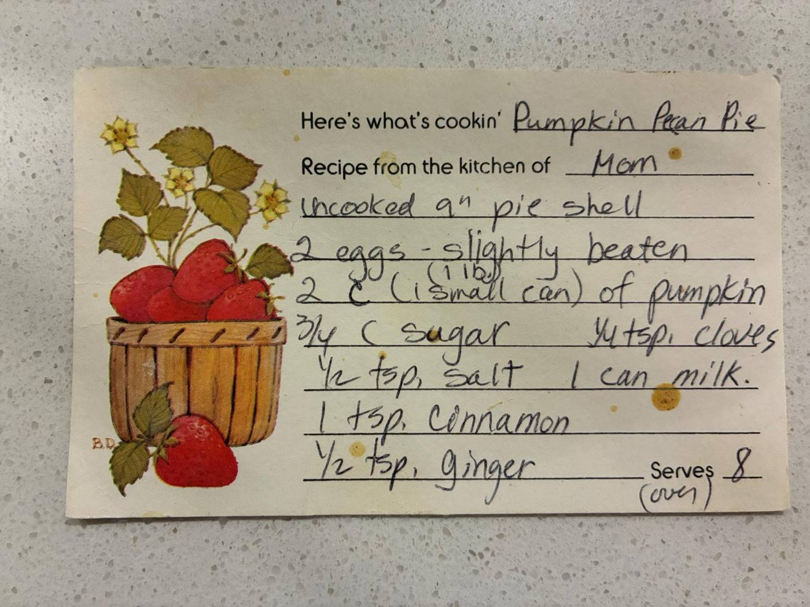
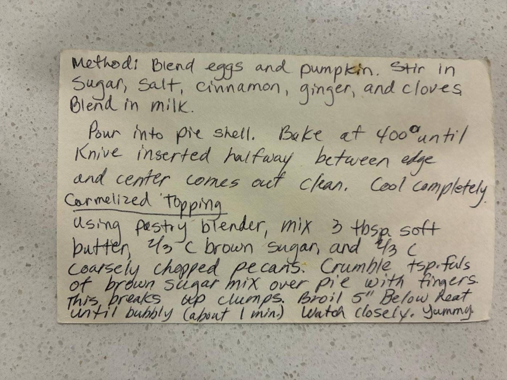

Desserts
Pumpkin Pecan Pie
From the kitchen of Mom
Oven400°F, then broil
Pie9-inch
Serves8


Mom's original card (front and back) · tap to enlarge
Ingredients
Pie
Caramelized topping
Method tap a step to mark it done
- Blend the eggs and pumpkin. Stir in the sugar, salt, cinnamon, ginger and cloves. Blend in the milk.
- Pour into the pie shell.
- Bake at 400°F for about 40–50 minutes, until a knife inserted halfway between the edge and the center comes out clean. not on card
- Cool completely.
- Topping: using a pastry blender, mix the soft butter, brown sugar and pecans.
- Crumble teaspoonfuls of the brown sugar mix over the pie with your fingers (this breaks up the clumps).
- Broil 5 inches below the heat until bubbly, about 1 minute. Watch closely.
Mom’s tips
- Yummy!
To check with Mom
- The card doesn't give a baking time. About 40–50 minutes at 400°F seems likely. Ask Mom to confirm.